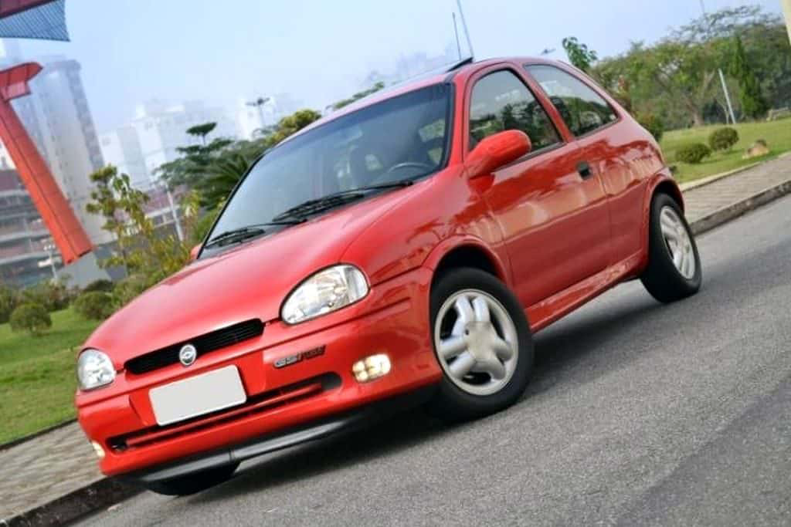

ESPORTIVO
Ficha Técnica
Ano
1995 - 1996
Motor
1.6 | 16V
Potência
108 cv
Câmbio
Manual | 5 marchas
Tração
Dianteira
Carroceria
Hatch
Combustível
Gasolina
FIPE
R$ 22.478 ~ R$ 27.606
Pequeno no tamanho. Gigante na atitude.
O Chevrolet Corsa GSi foi um dos pequenos esportivos mais marcantes dos anos 90. Com seu motor 1.6 16V, baixo peso e visual esportivo, entregava diversão ao volante e conquistou uma legião de apaixonados, tornando-se um dos Corsa mais desejados de sua época.